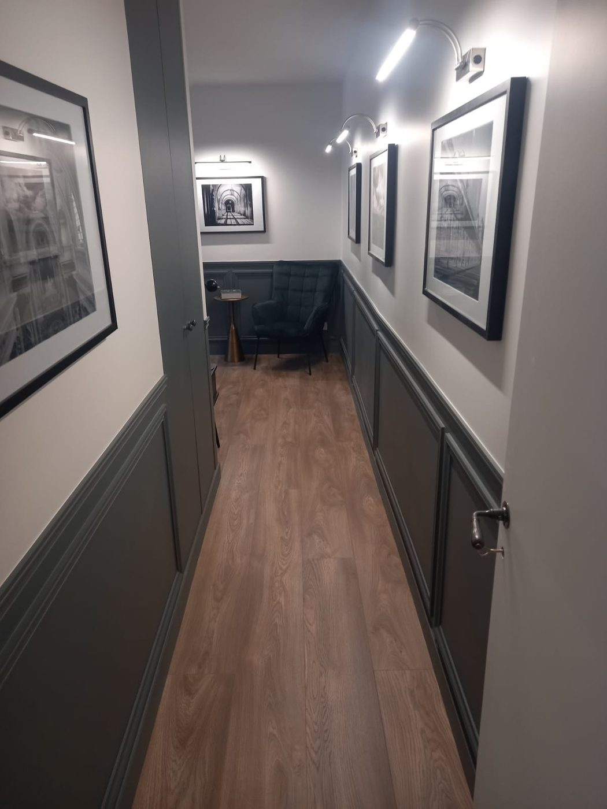
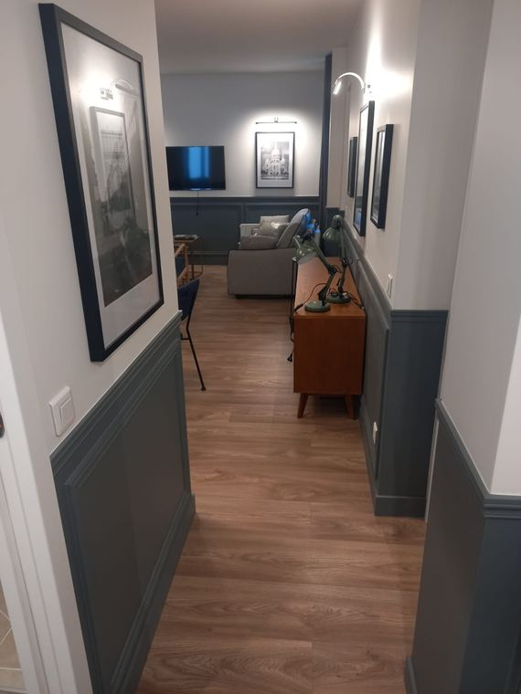
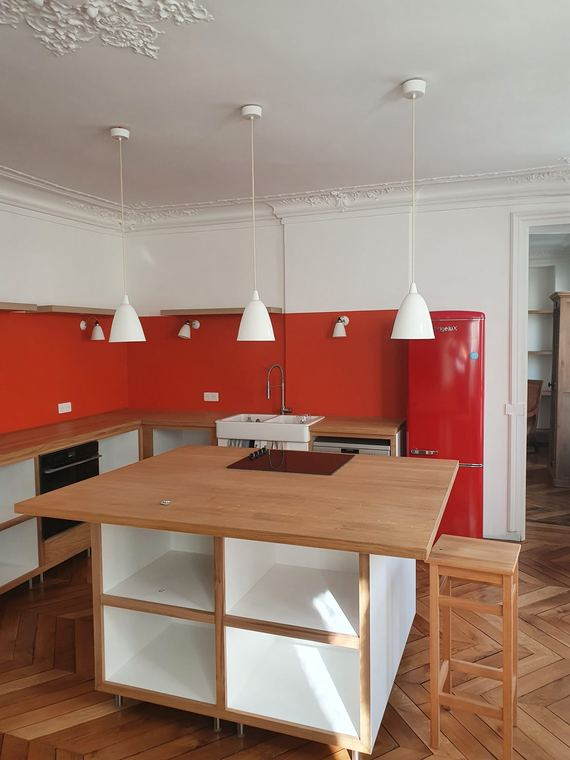
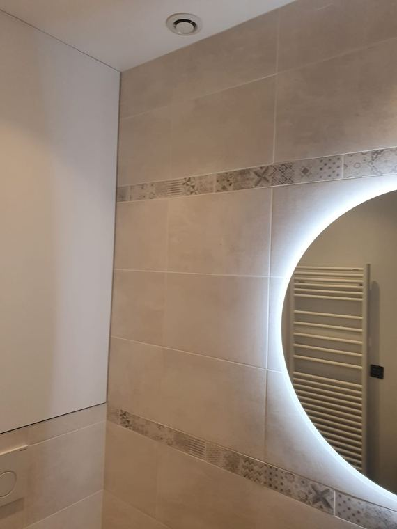
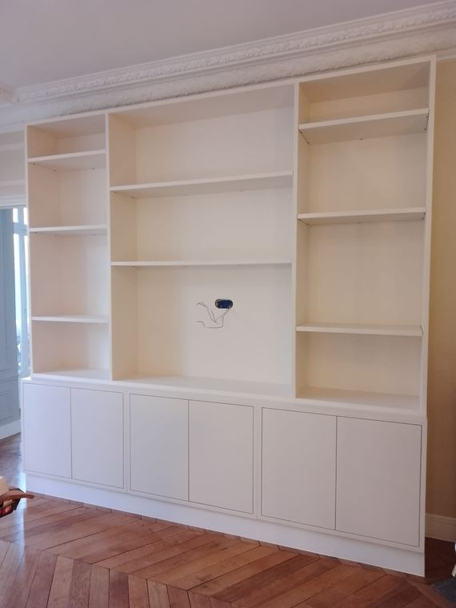
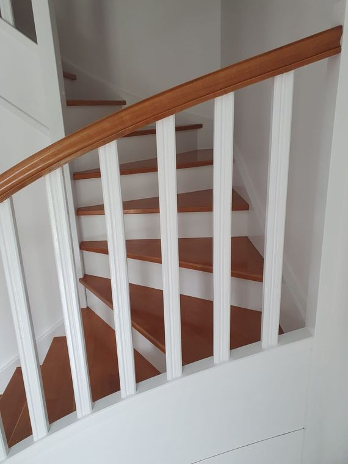
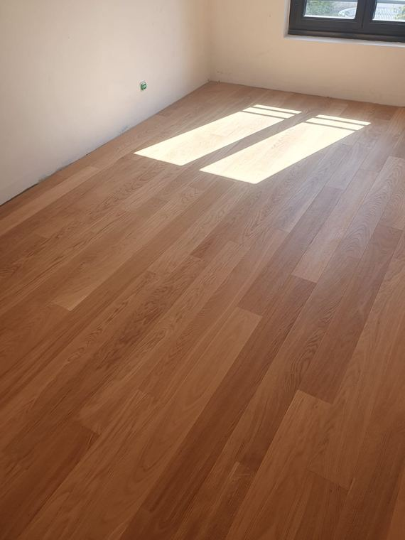

Rénovation intérieure, des cloisons à la finition
Peinture, plâtrerie, parquet, carrelage et agencement sur mesure. Une seule équipe, un seul interlocuteur, à Bry-sur-Marne, dans l'est parisien et à Paris.

Devis sous 48 h
Chiffrage détaillé poste par poste après la visite technique.
Prix affichés
Nos fourchettes sont publiques sur chaque page métier.
Neuf métiers en interne
Vous n'arbitrez jamais entre deux corps de métier.
Bry-sur-Marne et Paris
Atelier à Bry, intervention quotidienne dans l'est du 94 et à Paris.
Nos prestations
9 prestations en interne
Cinq métiers, une seule équipe
La plupart des chantiers de rénovation prennent du retard pour la même raison : il faut coordonner un plaquiste, un carreleur, un parqueteur, un peintre et un menuisier, chacun avec son planning. Nous réalisons ces cinq lots en interne.
Murs, plafonds, boiseries, moulures. Préparation soignée des supports.
dès 30 €/m² HTPlâtrerie et cloisonsCloisons, doublages, plafonds suspendus, isolation, bandes et enduits.
dès 45 €/m² HTParquetPose collée, point de Hongrie, ponçage et vitrification.
dès 40 €/m² HTCarrelage et faïenceSols, murs, grand format, douches à l'italienne.
dès 45 €/m² HTAgencement sur mesureBibliothèques, dressings, meubles sous pente, peints par nos soins.
dès 700 €/ml HTFinitions et décoration
Et les finitions qui font la différence une fois le gros du chantier passé.
Panoramiques, intissés, toile de verre, pose sur bâti ancien.
dès 24 €/m² HTPeintures décorativesBéton ciré, stuc, chaux, patines et effets de matière.
dès 70 €/m² HTPeinture extérieure et façadesMurs de cour, ferronneries, menuiseries extérieures.
dès 35 €/m² HTVitrerie et miroiterieRemplacement de vitrages, miroirs sur mesure, dépannage.
dès 150 € HTRéalisations
Photos de chantiers réels
Nos chantiers
Toutes les photos de ce site proviennent de chantiers que nous avons réalisés. Aucune image d'illustration.






Méthode
4 étapes, de l'appel à la réception
Comment se passe un chantier
Visite technique gratuite
Nous venons sur place, nous relevons les surfaces et nous regardons l'état réel des supports. C'est là que se joue l'écart entre un devis honnête et une mauvaise surprise.
Devis détaillé sous 48 heures
Poste par poste, avec les quantités, les produits et les délais. Pas de forfait opaque.
Chantier protégé
Sols et mobilier bâchés avant le premier coup de pinceau, locaux rangés chaque soir, déchets évacués. En appartement occupé, nous travaillons pièce par pièce.
Réception et levée de réserves
Nous passons avec vous, vous listez ce qui ne va pas, nous le reprenons. Le chantier n'est fini que quand vous le dites.
Engagements
Ce sur quoi vous pouvez nous tenir
Nos engagements
- Un interlocuteur uniqueDu premier appel à la réception, la même personne suit votre chantier.
- Une entreprise déclaréeSASU immatriculée au RCS de Paris, TVA intracommunautaire, attestations transmises sur simple demande.
- Un devis sous 48 heuresAprès la visite technique, jours ouvrés.
- Des prix publicsEn fourchettes, sur chaque page métier. Vous savez avant de nous appeler dans quel ordre de grandeur vous vous situez.
- Un chantier propreProtection des sols et du mobilier, nettoyage quotidien, déchets évacués.
- Des délais annoncés à la signatureEt un appel dès qu'un imprévu les modifie, pas la veille de la date promise.
Professionnels
Architectes, syndics, agences
Architectes, syndics et agences
Exécution sur plans, remises en état avant location, parties communes de copropriété. Chiffrage sur DPGF, retour sous 24 heures sur consultation, dossier administratif complet sur demande.
Zone d'intervention
Atelier à Bry-sur-Marne
Bry-sur-Marne, l'est parisien et Paris
Notre atelier est à Bry-sur-Marne. Nous intervenons quotidiennement à Bry, Villiers-sur-Marne, Le Perreux, Nogent, Champigny, Joinville-le-Pont, Saint-Maur, Chennevières, Fontenay-sous-Bois, Vincennes, Noisy-le-Grand et Montreuil, ainsi qu'à Paris. Au-delà, sur chantier d'un volume suffisant ou en sous-traitance professionnelle.
Questions fréquentes
6 réponses
Questions fréquentes
Le devis est-il payant ?
Non. La visite technique et le devis sont gratuits et sans engagement, partout dans notre zone d'intervention quotidienne.
Sous quel délai puis-je avoir un chiffrage ?
Sous 48 heures après la visite technique, jours ouvrés. Nous vous rappelons dans la journée pour fixer la visite.
Intervenez-vous en copropriété ?
Oui, y compris sur les parties communes et avec les contraintes d'horaires et d'ascenseur propres aux immeubles parisiens.
Fournissez-vous les matériaux ?
Oui pour la peinture, le placo, la colle et les consommables. Pour le parquet, le carrelage, la faïence et le papier peint, vous pouvez fournir vous-même ou nous les commander. Chaque devis précise ce qui est inclus.
Quel taux de TVA s'applique ?
10 % pour les logements achevés depuis plus de deux ans, lorsque nous fournissons matériaux et pose. 20 % pour les logements neufs et les locaux professionnels.
Puis-je rester chez moi pendant les travaux ?
Oui dans la grande majorité des cas. Nous travaillons pièce par pièce, nous bâchons et nous rangeons chaque soir. Les peintures que nous utilisons sont à faible teneur en COV.
Faites-vous la plomberie et l'électricité ?
Non. Nous intervenons sur les lots de finition uniquement. Nous nous coordonnons avec vos artisans ou nous vous orientons vers des partenaires que nous connaissons.
Passer à l'action
Réponse sous 24 h
Parlons de votre projet
Visite technique gratuite, devis détaillé sous 48 heures, dans l'est parisien et à Paris.